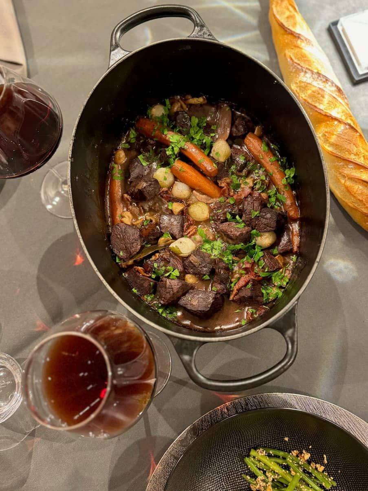
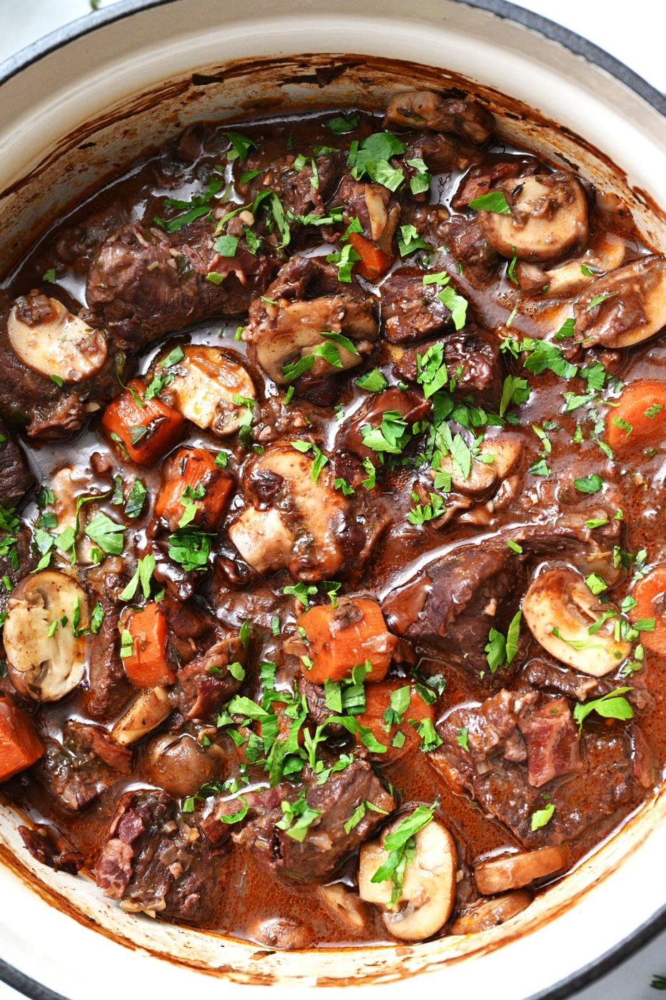
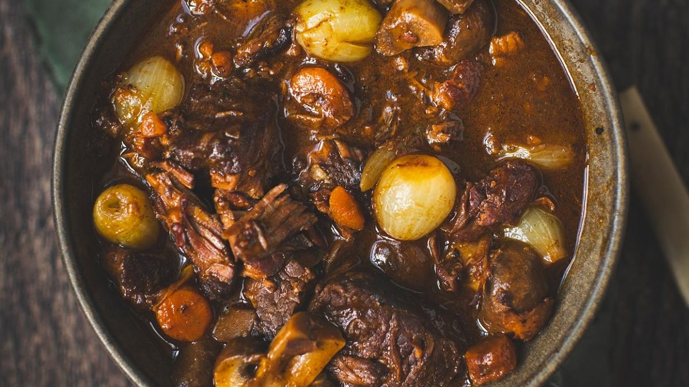
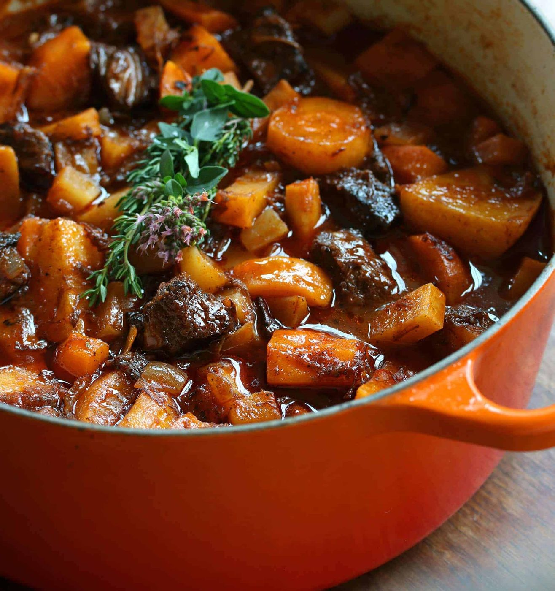
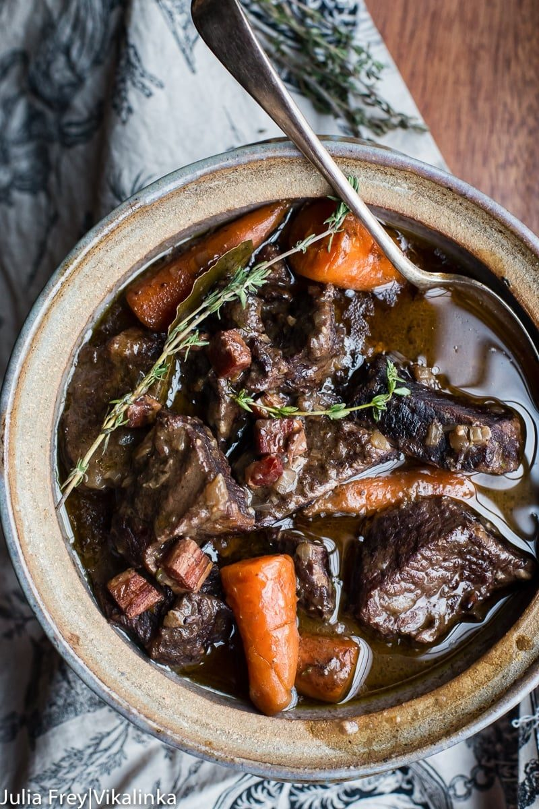
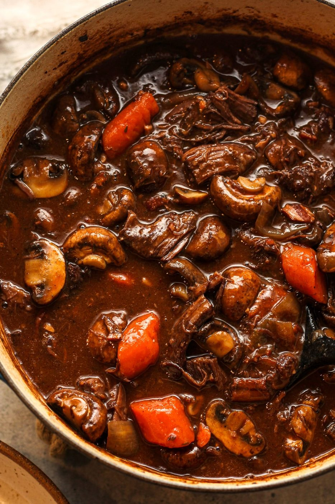
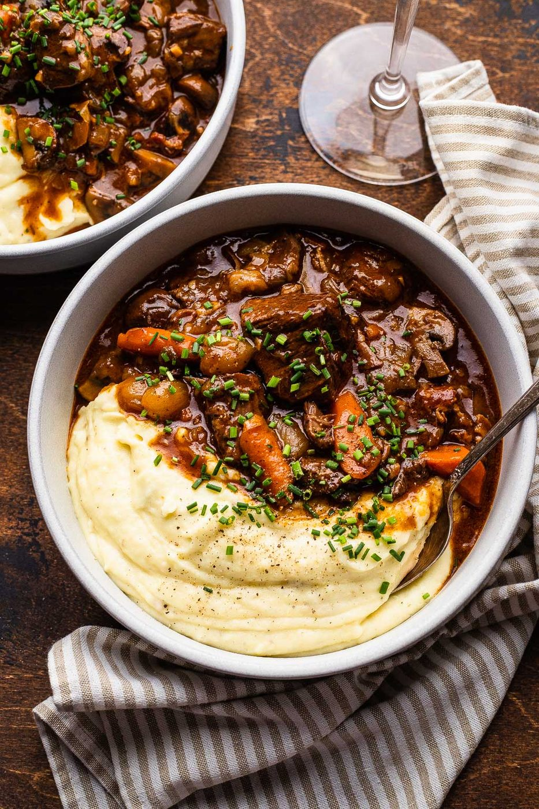
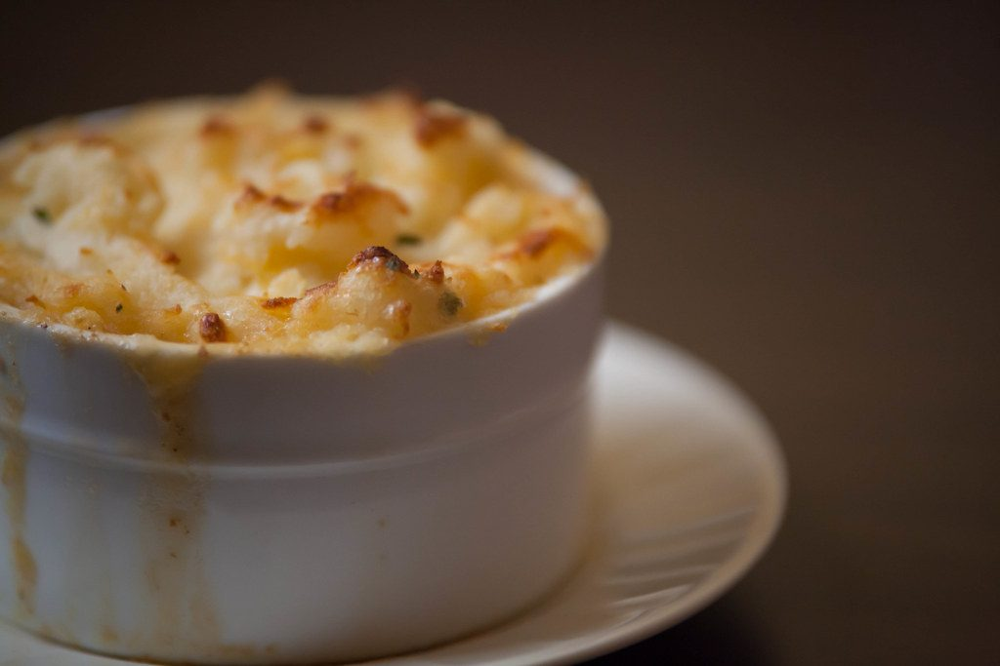

← French Bistro
Beef Bourguignon
Julia Child's Sunday stew: cheap cut, expensive taste, the whole house smells like Burgundy.
Julia Child's Sunday stew: cheap cut, expensive taste, the whole house smells like Burgundy.
Bourguignon is peasant ingenuity dressed for church: a tough, marbled chuck shoulder, cooked slowly in the wine of Burgundy until the connective tissue gives up and turns to silk. Every element builds the same flavor axis — seared beef, bacon lardons, caramelized vegetables, a bottle of red — and three hours does the rest.
Two things people get wrong. First, they rush the sear; brown meat is flavor, gray meat is boiled meat, and a wide pot in batches is the only way. Second, they serve it immediately. Like all great braises, bourguignon is noticeably better the next day, when the fat has firmed for easy removal and the wine has married everything into one deep voice. Make it Friday for Sunday.
serves 6 — tick items off as you shop; it saves as you go
Every tool this recipe leans on — click any tool for its full story. The whole catalog lives on the Tool Wall.
the entire recipe happens inside this one pot
strain the braising liquid - silk, not stew with lumps
holds the bouquet garni together
Render the bacon in the dutch oven until crisp; leave the fat behind. Remove lardons. That golden fat is where your stew starts.
Pat beef bone-dry, season, dust lightly with flour. Brown hard on every side — 8-10 minutes per batch — and do not crowd the pot. Crowding steams instead of sears, and pale stew is forever pale.
Brown the rough vegetables and tomato paste in the same pot. Return beef and lardons, add the wine and enough stock to nearly cover, tuck in the bouquet garni. Bring to a bare simmer.
Cover and cook at 160°C / 325°F or the lowest stove flame for 2.5-3 hours, until a fork slides into the meat with no argument. Bubbles should be lazy — a boil toughens the meat you are trying to tenderize.
The French finish with garnish done separately: pearl onions glazed buttery-sweet, mushrooms browned in butter. Fold them in for the last 15 minutes. Texture earned on its own beats texture boiled along.
Skim the fat (or chill overnight and lift it off like a lid). Simmer the sauce down until it coats a spoon — nappé. Parsley, and mustard-smearmed bread alongside. Mandatory.







Images are web-sourced via image search and self-hosted. Original sources:
https://z-cdn.chatglm.cn/image-search-mcp/images-ppt/1a3f50c53828.jpghttps://z-cdn.chatglm.cn/image-search-mcp/images-ppt/1a5eb86fa0b6.jpghttps://z-cdn.chatglm.cn/image-search-mcp/images-ppt/2708a791c45e.jpghttps://z-cdn.chatglm.cn/image-search-mcp/images-ppt/311c6e13211c.jpghttps://z-cdn.chatglm.cn/image-search-mcp/images-ppt/4426ec9776b1.jpghttps://z-cdn.chatglm.cn/image-search-mcp/images-ppt/d50f05ef4103.jpghttps://z-cdn.chatglm.cn/image-search-mcp/images-ppt/e7ad314745ad.jpgVerified working videos — click a card to load the embed.


The dish at a glance — twelve field notes for the collectors.
Powered by GitHub Issues — the backup kitchen. One issue per recipe; your comment lands in the repo.
Slow braised meat, two roofs: crusty bread beside the bowl or a fork-ridged potato lid on top.

If this one works for you, the neighbors probably will too.

slow fat, two continents: wine braise vs lard confit